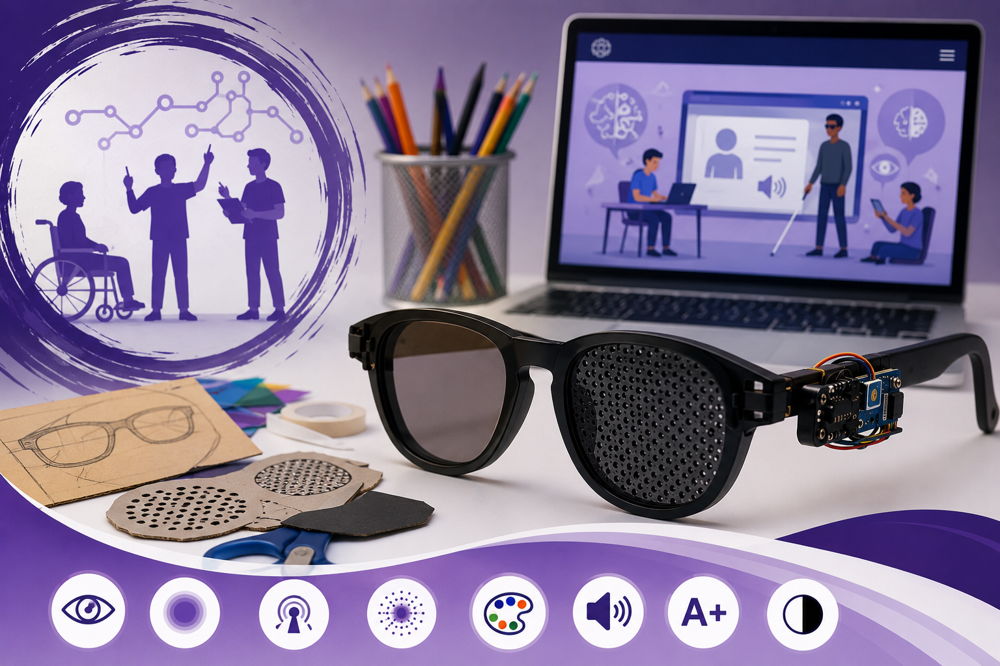

1º Trimestre
Projetos do 1º Trimestre
Conheça as experiências e produções desenvolvidas pelas turmas durante o primeiro trimestre.
Ver projetosUm espaço para compartilhar experiências, investigações, produções e projetos desenvolvidos pelos estudantes dos Itinerários Formativos.
Os Projetos Integradores articulam conhecimentos de diferentes componentes curriculares e aproximam os conteúdos escolares de situações presentes na sociedade.
Ao longo do ano letivo, os estudantes participam de experiências envolvendo investigação, criatividade, tecnologia, inclusão, trabalho colaborativo e resolução de problemas.
Selecione abaixo o trimestre que deseja conhecer.
Conheça as atividades realizadas ao longo do ano letivo.
Conheça as experiências e produções desenvolvidas pelas turmas durante o primeiro trimestre.
Ver projetos
No segundo trimestre, os projetos envolvem ciência, tecnologia, acessibilidade, inclusão e diferentes experiências desenvolvidas pelas turmas dos 1º e 2º anos.
Ver projetos
Os projetos e registros do terceiro trimestre serão publicados neste espaço ao longo do ano.
Ver projetosEste ambiente digital funciona como um registro das experiências realizadas pelos estudantes durante os Projetos Integradores do Colégio Estadual Paiçandu.
Fotografias, produções, protótipos e relatos serão incorporados às páginas ao longo do desenvolvimento das atividades.